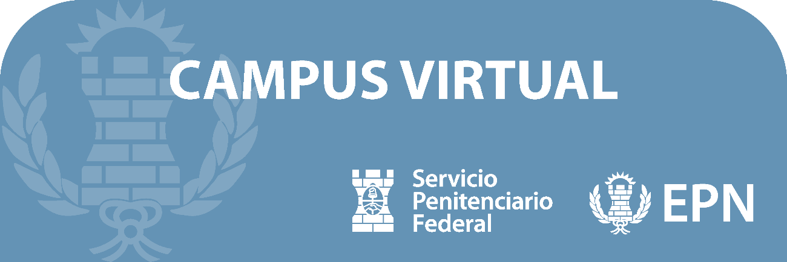
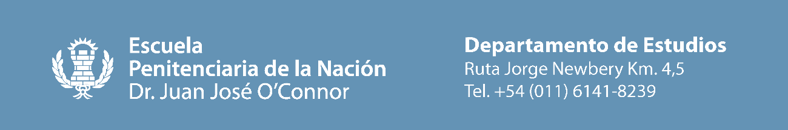

¡Hola!
Te damos la bienvenida a la Plataforma Virtual de la Escuela Penitenciaria de la Nación “Dr. Juan Jose O’Connor”.
Tu usuario en el Campus Virtual ha sido creado con las siguientes credenciales:
Sitio:
https://campusepn.spf.gob.ar/
Usuario:
TU
DNI (SIN PUNTOS)
Contraseña:
TU
DNI (SIN PUNTOS)
LAS AULAS VIRTUALES CORRESPONDIENTES YA HAN SIDO HABILITADAS
Te recomendamos que ingreses una vez leído este correo. En el primer ingreso el sistema te solicitara cambiar de forma obligatoria tu contraseña, una vez hecho el cambio tendrás que ingresar devuelta con la contraseña elegida.
En la sección de “Área personal” Podrás visualizar el modulo de “vista general de cuso” donde encontraras todas las aulas virtuales en las que estas matriculado.
Por cualquier consulta técnica, de la plataforma o inquietudes de esta podrás contactarte con nosotras a través del siguiente correo: estudiosepn@spf.gob.ar colocando en el asunto del mismo “Problema con el campus virtual” y en el cuerpo del mensaje tus datos y detallando el problema ocurrido o la inquietud.

¡Hola!
Estimados profesores:
El fin del presente correo es informarles sobre el Campus Virtual de la Escuela Penitenciaria de la Nación. Esta plataforma permitirá organizar y centralizar los contenidos de los cursos, facilitar la comunicación con los alumnos y optimizar el proceso de enseñanza y aprendizaje.
El campus virtual es intuitivo y de fácil acceso. Podrán subir el material didáctico, crear foros de debate, recibir y calificar tareas, entre otras funciones. Si bien la modalidad de la cursada es de formato presencial, el campus facilita el acceso a los alumnos sobre los contenidos de la materia, en los horarios en los cuales no se encuntra el profesor presente, como por ejemplo las horas de estudio complementarias.
Es dable destacar que al estar implementado en el servidor del mismo servicio penitenciario federal el acceso y la disponibilidad del mismo es mas estable y continua para los alumnos, en comparacion con otras alternaivas como classroom, google drive, mail u aplicaciones similar. Esto es devido a que los alumnos se proveen de internet de la misma red en la cual se encuentra enlazada el campus virtual.
Ante cualquier duda sobre el uso y funciones del campus, pueden comunicarse con el área de soporte técnico mediante los siguientes formularios:
Soporte tecnico:
Matriculaciones y aperturas de espacios virtuales:
o al correo electronico: .…
El equipo de soporte los guiará en el proceso de adaptación a esta nueva herramienta.
Esperamos que el campus virtual sea de utilidad en su labor docente. Estamos convencidos de que potenciará la calidad educativa de nuestra institución.
Link de acceso y credenciales:
Sitio:
https://campusepn.spf.gob.ar/
Usuario:
TU
DNI (SIN PUNTOS)
Contraseña:
TU
DNI (SIN PUNTOS)
Saludos cordiales, El Departamento de Estudios de la Escuela Penitenciaria de la Nación “Dr. Juan Jose O’Connor”.